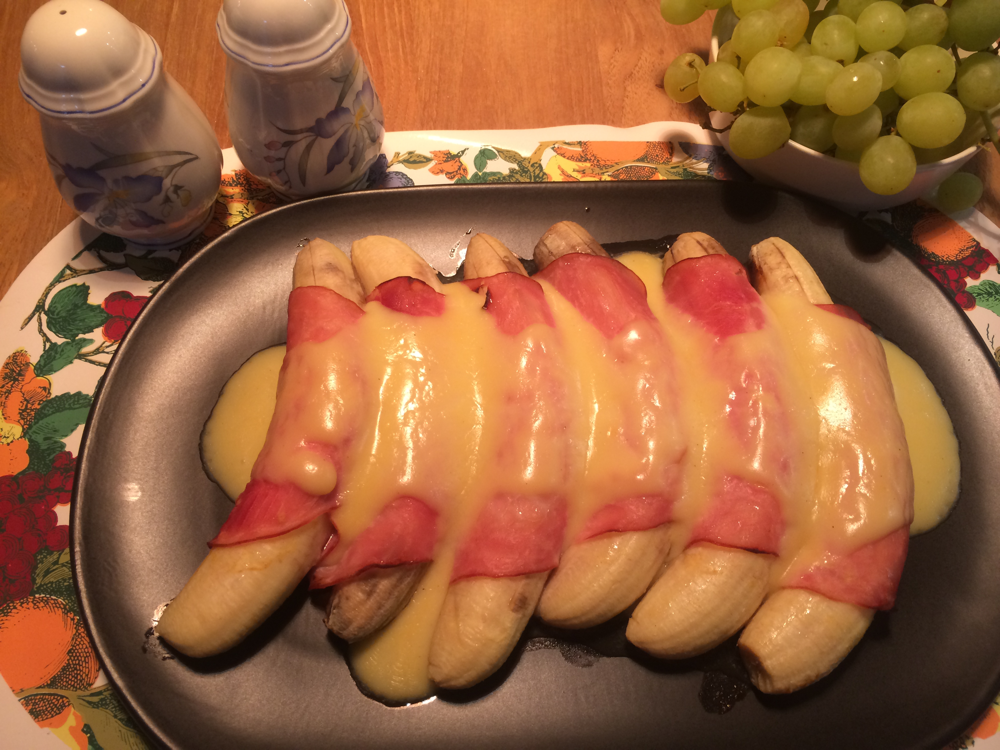

Ham and Bananas Hollandaise

Britney Spears of gross recipes
All you need to know is bananas, ham and hollandaise.
not worth trying.
Ingredients
- 6 Bananas
- 1/4 cup lemon juice
- 6 thin slices boiled ham
- 3 tablespoons prepared mustard
- 2 envelopes (11/4-ozs size) hollandaise sauce mix
- 1/4 cup light cream
Step by step
- Preheat oven to 400F. Lightly butter 2-quart, shallow baking dish.
- Peel bananas; sprinkle each with 1/2 tablespoon lemon juice, to prevent darkening.
- Spread ham slices with mustard. Wrap each banana in slice of ham. Arrange in single layer in casserole. Bake 10 minutes.
- Meanwhile, make sauce: In small saucepan, combine sauce mix with 1 cup water, 1 tablespoon lemon juice, and cream. Heat, stirring, to boiling; pour over bananas.
Bake 5 minutes longer, or until slightly golden. Nice with a green salad for brunch or lunch.
Back to main page